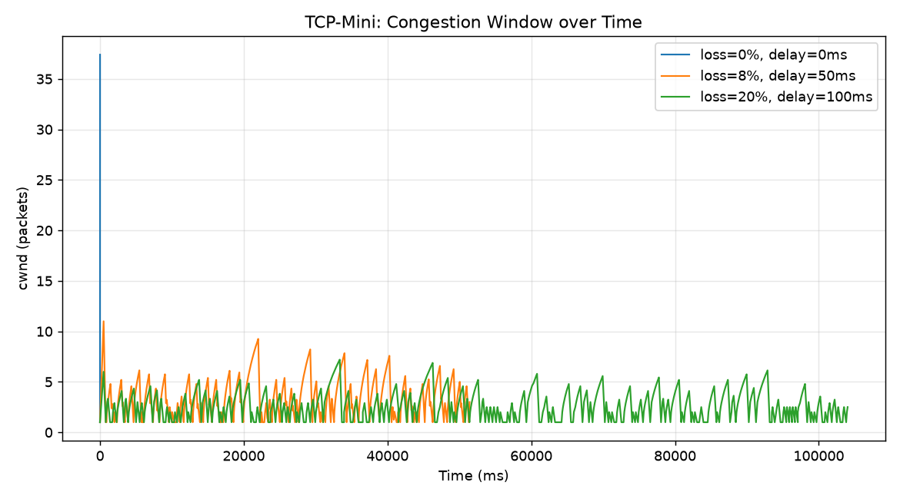
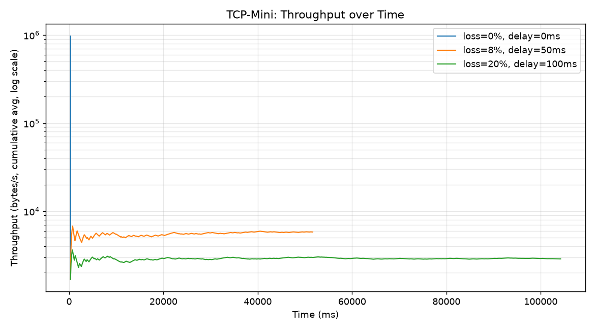

پروژه شامل دو برنامهٔ مستقل sender.cpp و receiver.cpp است که هر دو از یک socket از نوع
SOCK_DGRAM (UDP) استفاده میکنند. تمام قابلیتهای لایهٔ انتقال قابلاعتماد — شمارهگذاری بستهها،
ACK تجمعی، تایماوت و ارسال مجدد، پنجرهٔ لغزان و کنترل ازدحام — بهصورت کامل در سطح برنامه (application layer)
پیادهسازی شدهاند و هیچ کتابخانهٔ آمادهای برای این بخشها استفاده نشده است.
ساختار فایلها دقیقاً مطابق پیشنهاد فاز صفر است:
packet.hpp — قالب بسته، checksum، سریالسازی/دیسریالسازیtimer.hpp — Stopwatch برای زمانسنجی و RtoTimer برای مدیریت تایمر ارسال مجددlogger.hpp — نویسندهٔ events.log و cwnd.csvsender.cpp / receiver.cpp — برنامههای اصلی فرستنده و گیرندهMakefile — کامپایل با makescripts/run_experiments.py — اجرای خودکار آزمایشهای فاز پنج و رسم نمودارهافرستنده بهجای شمارهگذاری بایتی، بستهها را با شمارهٔ ترتیبی segment (packet index) شمارهگذاری میکند که با مثالهای صورت پروژه («اگر گیرنده تا بستهٔ ۱۰ را دریافت کرده، ACK شمارهٔ ۱۱ را میفرستد») کاملاً همخوان است و پیادهسازی و اشکالزدایی را سادهتر میکند.
پروتکل به شکل Go-Back-N با یک تایمر واحد برای قدیمیترین بستهٔ تأییدنشده عمل میکند: گیرنده فقط بستهای را میپذیرد که دقیقاً شمارهٔ موردانتظار را داشته باشد؛ در غیر این صورت (بستهٔ خارج از ترتیب یا تکراری) یک ACK تکراری برای همان شمارهٔ موردانتظار میفرستد. این رفتار هم مبنای منطق ACK تجمعی است و هم پیشنیاز طبیعی مکانیزم Fast Retransmit در فاز امتیازی.
برنامه با سه حالت قابلانتخاب (--mode) اجرا میشود که هرکدام معادل یکی از فازهای پروژه است:
| mode | معادل فاز | توضیح |
|---|---|---|
stopwait | فاز ۱ | پنجرهٔ ارسال ثابت و برابر با ۱ بسته |
window | فاز ۲ | پنجرهٔ لغزان با اندازهٔ ثابت (--window-size) |
congestion | فاز ۴/۵ | پنجرهٔ مؤثر برابر min(receiver_window, cwnd) با Slow Start / Congestion Avoidance |
شبیهسازی loss و delay (فاز ۳) در سطح گیرنده و مستقل از mode با پارامترهای --loss و --delay
پیاده شده تا بتوان آن را روی هر سه حالت اعمال کرد.
struct PacketHeader {
uint32_t seq_num; // شمارهٔ ترتیبی این segment (برای بستههای کنترلی خالص، صفر)
uint32_t ack_num; // شمارهٔ segment بعدی موردانتظار (ACK تجمعی)
uint16_t length; // طول payload بر حسب بایت
uint16_t checksum; // checksum مکمل یک ۱۶بیتی روی header + payload
uint8_t flags; // ترکیب بیتی از DATA / ACK / FIN
};
| فیلد | کاربرد |
|---|---|
seq_num | شمارهٔ بستهٔ داده؛ گیرنده با مقایسهٔ آن با expected_seq بستههای خارج از ترتیب یا تکراری را تشخیص میدهد. |
ack_num | در بستههای ACK، شمارهٔ segment بعدی موردانتظار گیرنده را اعلام میکند (رفتار تجمعی مشابه TCP واقعی). |
length | طول payload برای بازسازی دقیق مرز بسته هنگام deserialize و اعتبارسنجی سازگاری اندازهٔ بافر UDP. |
checksum | تشخیص خطای بیتی؛ اگر checksum نامعتبر باشد بسته بهصورت خاموش دور ریخته میشود (رفتاری معادل packet loss). |
flags | نوع بسته را مشخص میکند: DATA، ACK یا FIN (و ترکیب ACK|FIN برای تأیید پایان انتقال). |
تابع computeChecksum یک checksum مکمل یک ۱۶بیتی به سبک IP/TCP روی header (با صفر فرضکردن
فیلد checksum) بههمراه payload محاسبه میکند. serialize فیلدهای عددی را با htonl/htons
به ترتیب بایت شبکه تبدیل کرده و header را به بافر بایتی متصل به payload تبدیل میکند؛ deserialize عملیات
معکوس را انجام داده و علاوهبر تطابق طول، خود checksum را نیز اعتبارسنجی میکند.
در حالت stopwait اندازهٔ پنجرهٔ ارسال همیشه برابر ۱ است: فرستنده یک بسته میفرستد، تایمر RTO
(پیشفرض ۱۰۰۰ میلیثانیه، قابل تنظیم با --timeout-ms) را شروع میکند و تا دریافت ACK یا انقضای
تایمر، بستهٔ بعدی ارسال نمیشود. اگر تایمر منقضی شود، همان بسته دوباره ارسال و تایمر بازنشانی میشود.
نمونهٔ رویدادهای واقعی ثبتشده در events.log برای این حالت (فایل نمونه sample_input.txt، ۱۱۴۰۰۰ بایت، بدون loss):
[1.28ms] SEND seq=0 len=512 [1.62ms] ACK ack_num=1 cwnd=1.000000 ssthresh=16.000000 [1.66ms] SEND seq=1 len=512 [1.79ms] ACK ack_num=2 cwnd=1.000000 ssthresh=16.000000 [1.82ms] SEND seq=2 len=512 [1.90ms] ACK ack_num=3 cwnd=1.000000 ssthresh=16.000000 ...
خروجی کنسول فرستنده و نتیجهٔ مقایسهٔ فایل خروجی با ورودی:
[sender] transfer complete mode : stop-and-wait total packets : 223 total bytes : 114000 packets sent (w/ rtx) : 223 retransmissions : 0 timeouts : 0 acks received : 223 elapsed time (ms) : 18.29 throughput (bytes/s) : 6,233,400 $ diff sample_input.txt output_stopwait.txt $ echo $? 0 <-- فایل خروجی دقیقاً برابر فایل ورودی است
نتیجه: انتقال کامل و صحیح، بدون هیچ ارسال مجددی چون شبکهٔ آزمایش (loopback) بدون افت بسته است.
در حالت window، فرستنده اجازه دارد تا window_size بستهٔ متوالی را بدون انتظار برای
ACK تکتک آنها ارسال کند. گیرنده مانند قبل فقط بستهٔ دقیقاً همشماره با expected_seq را میپذیرد و
ACK تجمعی (ack_num = expected_seq پس از پردازش) میفرستد. با دریافت هر ACK جدید (بزرگتر از
send_base فعلی)، فرستنده send_base را جلو میبرد و در نتیجه پنجره «میلغزد» و بستههای
جدید ارسال میشوند. تنها یک تایمر RTO برای قدیمیترین بستهٔ تأییدنشده فعال است؛ در صورت timeout، تمام بستههای
بین send_base و next_seq دوباره ارسال میشوند (رفتار کلاسیک Go-Back-N).
[0.17ms] SEND seq=0 len=512 [0.22ms] SEND seq=1 len=512 [0.23ms] SEND seq=2 len=512 [0.23ms] SEND seq=3 len=512 [0.23ms] SEND seq=4 len=512 [0.24ms] SEND seq=5 len=512 [0.24ms] SEND seq=6 len=512 [0.25ms] SEND seq=7 len=512 <-- ۸ بسته پشتسرهم بدون انتظار برای ACK (window_size=8) [0.44ms] ACK ack_num=1 ... [0.47ms] SEND seq=8 len=512 <-- پنجره جلو رفت
| حالت | window | packets | retransmissions | elapsed (ms) | throughput (B/s) |
|---|---|---|---|---|---|
| Stop-and-Wait | 1 | 223 | 0 | 18.29 | 6,233,400 |
| Sliding Window | 8 | 223 | 0 | 3.58 | 31,831,400 |
نتیجه: با window=8 زمان انتقال حدود ۵ برابر کاهش یافته است. علت این است که در Stop-and-Wait فقط یک بسته در هر
RTT وارد شبکه میشود و ظرفیت لینک بهطور کامل استفاده نمیشود؛ در Sliding Window چند بسته همزمان «در پرواز»
هستند و RTT بعدی همپوشانی میکند، بنابراین throughput مؤثر بهجای 1/RTT به مقدار
window_size/RTT نزدیک میشود. (روی loopback محلی این تفاوت حتی محافظهکارانه دیده میشود؛ روی
شبکهای با RTT واقعی، بهبود سلینگویندو معمولاً چشمگیرتر است.)
کلاس RtoTimer در timer.hpp یک تایمر ساده و تک برای قدیمیترین بستهٔ ارسالشدهٔ
تأییدنشده (send_base) پیادهسازی میکند. حلقهٔ اصلی فرستنده از select() برای
انتظار همزمان روی ورود ACK یا انقضای تایمر استفاده میکند تا CPU درگیر busy-wait نشود:
send_base را جلو میبرد، تایمر بازنشانی (restart) میشود؛ اگر همهٔ داده تأیید شده باشد، تایمر متوقف میشود.TIMEOUT ثبت شده و تمام بستههای بازهٔ [send_base, next_seq) دوباره ارسال میشوند.congestion، هر timeout باعث ssthresh = cwnd/2 و بازگشت cwnd = 1 میشود.مقدار RTO با --timeout-ms قابل تنظیم است (پیشفرض طبق صورت پروژه، ۱۰۰۰ میلیثانیه).
گیرنده با پارامترهای --loss P و --delay MS اجرا میشود. برای هر بستهٔ DATA دریافتی، یک
عدد تصادفی یکنواخت در [0,1) تولید میشود و اگر کوچکتر از P باشد، بسته بدون ارسال ACK
دور ریخته میشود (دقیقاً معادل گمشدن بسته در شبکه). برای بستههای پذیرفتهشده، قبل از ارسال ACK بهاندازهٔ
--delay میلیثانیه (usleep) تأخیر مصنوعی اعمال میشود. یک flag اختیاری --seed
هم اضافه شده تا الگوی افت بسته در آزمایشهای تکرارپذیر باشد (برای مقایسهٔ منصفانهٔ Fast Retransmit استفاده شده است).
نتایج آزمایش پنجرهٔ لغزان ثابت (window=8) روی sample_input.txt با مقادیر مختلف loss:
| loss | delay | تطابق فایل | packets sent | retransmissions | timeouts | elapsed (ms) | throughput (B/s) |
|---|---|---|---|---|---|---|---|
| 0% | 0ms | مطابق | 223 | 0 | 0 | 3.83 | 29,774,200 |
| 5% | 50ms | مطابق | 295 | 72 | 9 | 14,226 | 8,013 |
| 10% | 50ms | مطابق | 345 | 122 | 16 | 16,499 | 6,909 |
| 20% | 100ms | مطابق | 6,971 | 6,748 | 848 | 279,859 | 407.3 |
window ثابت و بدون کنترل ازدحام، فرستنده مجبور شد
۶,۹۷۱ بار بسته ارسال کند (برای فقط ۲۲۳ بستهٔ منحصربهفرد!) و ۲۷۹.۸ ثانیه طول کشید. در همان درصد loss اما با
--mode congestion (فاز ۵، آزمایش ۳ در بخش ۱۰)، با وجود فایل بزرگتر (۵۸۶ بسته)، فقط ۱,۰۵۶ بسته ارسال
و در ۱۰۴ ثانیه تمام شد. علت اصلی این است که پنجرهٔ ثابت (۸) هیچگاه در برابر loss زیاد کوچک نمیشود؛ در نتیجه هر
timeout کل پنجرهٔ ۸تایی را از نو میفرستد و چون احتمال موفقیت کامل یک پنجرهٔ ۸تایی زیر loss=۲۰٪ فقط
0.8^8 ≈ 17% است، بیشتر تلاشها دوباره timeout میخورند. کنترل ازدحام adaptice با کوچککردن cwnd به ۱
پس از هر ازدحام، احتمال موفقیت هر «دور» را بسیار بالاتر میبرد و فرستنده تدریجی و مطمئن پیش میرود. این آزمایش
بهروشنی نشان میدهد چرا پنجرهٔ لغزان بدون کنترل ازدحام برای شبکههای واقعی و پرافت کافی نیست و
چرا فاز ۴ پروژه (Slow Start / Congestion Avoidance) یک بهبود اساسی نسبت به فاز ۲ محسوب میشود.
چرا افزایش loss باعث افزایش retransmission و کاهش throughput میشود: در Go-Back-N، ازدسترفتن یک
بستهٔ داده باعث میشود گیرنده تمام بستههای بعدی همان پنجره را (چون خارج از ترتیب هستند) دور بریزد و برای هرکدام
یک ACK تکراری برای همان expected_seq بفرستد. فرستنده تا رسیدن timeout هیچ ACK جدیدی دریافت نمیکند
و در نهایت کل پنجره را دوباره میفرستد، نه فقط بستهٔ گمشده. بنابراین با افزایش احتمال loss:
1-(1-P)^8 است).مجموع این عوامل باعث میشود throughput مؤثر تقریباً با نرخ بسیار سریعتر از خطی نسبت به loss کاهش یابد، دقیقاً همان روندی که در جدول بالا دیده میشود.
در حالت congestion، پنجرهٔ مؤثر ارسال برابر effective_window = min(receiver_window, floor(cwnd))
است. receiver_window طبق پیشنهاد صورت پروژه ثابت در نظر گرفته شده (پارامتر --window-size،
در آزمایشها ۶۴) و تمرکز اصلی روی رشد/کاهش cwnd است. مقداردهی اولیه دقیقاً طبق صورت پروژه:
cwnd = 1.0 ssthresh = 16.0
Slow Start (وقتی cwnd < ssthresh): با دریافت هر ACK جدید، cwnd += 1؛
چون در هر RTT بهطور میانگین cwnd بستهٔ ACK دریافت میشود، این معادل تقریباً دوبرابر شدن cwnd در هر
RTT (رشد نمایی) است.
Congestion Avoidance (وقتی cwnd ≥ ssthresh): با هر ACK جدید cwnd += 1/cwnd؛
این تقریب استاندارد TCP باعث میشود مجموع افزایش در طول یک RTT کامل (که در آن حدود cwnd بسته ACK
میشود) دقیقاً حدود یک بسته باشد، یعنی رشد خطی و آرام بهجای رشد نمایی.
واکنش به Timeout:
ssthresh = cwnd / 2 cwnd = 1
و پروتکل دوباره وارد Slow Start میشود.
cwnd.csv)time_ms,cwnd,ssthresh 0.00,1.00,16.00 0.32,2.00,16.00 0.42,3.00,16.00 0.47,4.00,16.00 ... 6.94,37.29,16.00 <-- پس از عبور از ssthresh=16، رشد بهوضوح کندتر و خطی شده است 6.96,37.40,16.00
[803.44ms] TIMEOUT sendBase=10 nextSeq=21 [2009.85ms] TIMEOUT sendBase=21 nextSeq=24 [2360.75ms] TIMEOUT sendBase=22 nextSeq=24
در همین بازه، cwnd.csv نشان میدهد بلافاصله بعد از هر رویداد TIMEOUT مقدار cwnd به ۱
افت میکند و ssthresh نصف مقدار قبلی خود میشود؛ سپس رشد نمایی Slow Start از نو آغاز میگردد —
دقیقاً الگوی «دندانهارهای» (sawtooth) معروف TCP.
timeout در نبود اطلاع مستقیم از وضعیت شبکه، قویترین نشانهٔ ممکن برای ازدحام است: یعنی بستهای آنقدر طولانی در
صف روترها مانده یا حذف شده که حتی retransmission timeout هم منقضی شده. فرستنده با نصفکردن ssthresh
تخمین محتاطانهای از ظرفیت فعلی شبکه (نیمی از آنچه قبلاً کار میکرد) ثبت میکند و با بازگشت cwnd به ۱،
فشار وارد بر شبکهٔ بهاحتمال ازدحامزده را فوراً به حداقل میرساند. سپس Slow Start این امکان را میدهد که فرستنده
بهسرعت (رشد نمایی) دوباره به نزدیکی ظرفیت واقعی برسد، اما همینکه به ssthresh (تخمین محتاطانهٔ
ظرفیت) رسید، وارد فاز Congestion Avoidance با رشد آرامتر میشود تا از تکرار ازدحام جلوگیری کند. این دقیقاً همان
راهبرد AIMD (Additive Increase / Multiplicative Decrease) است که پایداری کنترل ازدحام TCP را تضمین میکند.
با پرچم --fast-retransmit، فرستنده تعداد ACKهای تکراری برای send_base را میشمارد.
با رسیدن به سه ACK تکراری، بدون انتظار برای انقضای RTO بستهٔ گمشده دوباره فرستاده میشود:
if duplicate_ack_count == 3:
ssthresh = cwnd / 2
retransmit(segment[send_base])
cwnd = fast_recovery_enabled ? ssthresh : 1
با پرچم اضافی --fast-recovery، بهجای بازگشت کامل cwnd به ۱ (که معادل شروع دوبارهٔ
کامل Slow Start است)، مقدار cwnd به ssthresh تنظیم میشود؛ یعنی فرستنده مستقیماً وارد
Congestion Avoidance میشود، چون سه ACK تکراری نشان میدهد بستههای دیگر همچنان به مقصد میرسند و شبکه کاملاً
مسدود نشده (برخلاف timeout).
| حالت | retransmissions | fast retransmits | timeouts | elapsed (ms) | throughput (B/s) |
|---|---|---|---|---|---|
| بدون Fast Retransmit | 261 | 0 | 46 | 22,856 | 13,126 |
| با Fast Retransmit + Fast Recovery | 226 | 39 | 45 | 24,468 | 12,261 |
مشاهده: تعداد retransmissionهای معمولی با فعالبودن Fast Retransmit کاهش یافته (۲۲۶ در برابر ۲۶۱)، چون ۳۹ مورد از بازارسالها زودتر و بدون نیاز به کاملشدن یک RTO انجام شدهاند. کاهش تعداد timeout در این آزمایش خاص محسوس نیست، چون روی loopback با تأخیر کم، RTOهای معمولی هم بهسرعت (۳۰۰ms) سررسید میشوند؛ روی شبکهٔ واقعی با RTT بزرگتر، فایدهٔ Fast Retransmit (پرهیز از انتظار کامل RTO) معمولاً بسیار محسوستر است. در هر دو حالت فایل خروجی دقیقاً با ورودی برابر بود.
# کامپایل
make
# اجرای گیرنده (پورت، فایل خروجی، احتمال loss، تأخیر ACK به میلیثانیه)
./receiver 8080 output.txt --loss 0.1 --delay 100
# اجرای فرستنده (آیپی گیرنده، پورت، فایل ورودی، حالت پروتکل)
./sender 127.0.0.1 8080 input.txt --mode congestion --window-size 64 \
--packet-size 512 --timeout-ms 300 --fast-retransmit --fast-recovery
نمونهٔ خروجی واقعی کنسول (بدون هیچ ویرایشی، مستقیم از اجرای پروژه):
$ ./sender 127.0.0.1 9200 sample_big.bin --mode congestion --window-size 64 \
--packet-size 512 --timeout-ms 200 --log-dir logs/congestion_noloss
[sender] transfer complete
mode : congestion-control
total packets : 586
total bytes : 300000
packets sent (w/ rtx) : 586
retransmissions : 0
fast retransmits : 0
timeouts : 0
acks received : 586
elapsed time (ms) : 11.48
throughput (bytes/s) : 26,123,100
$ cmp sample_big.bin output_cc_noloss.bin
$ echo $?
0
سه آزمایش موردنیاز صورت پروژه با scripts/run_experiments.py روی یک فایل باینری تصادفی ۳۰۰,۰۰۰ بایتی
(sample_big.bin) در حالت congestion (با Fast Retransmit/Recovery فعال، window-size=64،
packet-size=512، timeout-ms=300) و با seed ثابت برای تکرارپذیری اجرا شدند.
| آزمایش | loss | delay | تطابق فایل | packets sent | retransmissions | fast retransmits | timeouts | elapsed (ms) | throughput (B/s) |
|---|---|---|---|---|---|---|---|---|---|
| ۱ - بدون loss | 0% | 0ms | مطابق | 586 | 0 | 0 | 0 | 7.02 | 42,736,300 |
| ۲ - loss متوسط | 8% | 50ms | مطابق | 853 | 267 | 39 | 57 | 51,409 | 5,836 |
| ۳ - loss زیاد | 20% | 100ms | مطابق | 1,056 | 470 | 12 | 148 | 104,013 | 2,884 |

receiver_window=64 رشد میکند. در سناریوهای پرافت، الگوی دندانهارهای مشخص است:
رشد نمایی Slow Start تا برخورد با loss، سپس افت شدید cwnd به ۱ و شروع دوبارهٔ چرخه؛ هرچه loss بیشتر، این چرخهها
متراکمتر و سقف cwnd پایینتر باقی میماند.
receiver_window رشد میکند و از آنپس
ثابت میماند؛ throughput نهایی (~۴۲.۷ مگابایت/ثانیه روی loopback) عملاً محدود به سرعت پردازش CPU/حافظه است،
نه پروتکل.
جدول کامل خروجی این سه آزمایش (تولیدشده خودکار توسط اسکریپت) در plots/experiment_summary.csv و لاگهای
کامل هر آزمایش در logs/exp1_no_loss/، logs/exp2_moderate_loss/ و
logs/exp3_high_loss/ موجود است.
lastAckNum جداگانه برای تشخیص
duplicate ACK نگه میداشت که در برخورد با ACKهای «کهنه» (مربوط به دادهای که قبلاً بهطور کامل تأیید شده) میتوانست
بهاشتباه بازنویسی شود و شمارش ACK تکراری را خراب کند. راهحل نهایی حذف این متغیر و اتکا به مقایسهٔ مستقیم
ack_num == send_base بود که هم سادهتر و هم بدون این اشکال است.--seed به گیرنده اضافه شود، چون RNG پیشفرض (std::random_device) بین اجراهای مختلف
تکرارپذیر نیست و بدون seed ثابت، تفاوت نتایج ممکن بود ناشی از تفاوت الگوی افت باشد نه از خود مکانیزم.throughput/time بود ولی throughput
آنی (instantaneous) روی بازههای کوچک نویز زیادی دارد، throughput بهصورت میانگین تجمعی («بایت دریافتی تا این
لحظه تقسیم بر زمان سپریشده») محاسبه و با مقیاس لگاریتمی رسم شد تا روند کلی سه سناریو در یک نمودار قابل مقایسه
باشد.recvfrom استخراج میکند و
از همان آدرس برای ارسال تمام ACKها استفاده میکند؛ پایان انتقال هم با یک تبادل FIN/FIN-ACK best-effort (حداکثر
۵ تلاش) مدیریت میشود.
در تمام آزمایشهای این گزارش — شامل فایل متنی و باینری، سه حالت پروتکل، و بازهٔ loss از ۰ تا ۲۰ درصد —
فایل بازسازیشده در سمت گیرنده با diff/cmp بهطور کامل و بایتبهبایت با فایل ورودی
فرستنده مطابقت داشت. کد در packet.hpp، timer.hpp، logger.hpp،
sender.cpp و receiver.cpp با g++ -std=c++17 -Wall -Wextra بدون هیچ
هشداری کامپایل میشود.
شرح تقسیم کار: پروژه بهصورت انفرادی توسط سجاد تقیزاده طراحی، پیادهسازی، آزمایش و مستندسازی شده است.